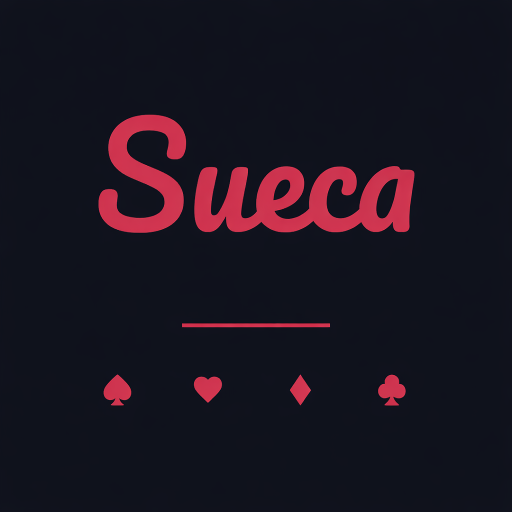

Última actualización: marzo 2026
Al usar Sueca Online aceptas estos términos. Si no estás de acuerdo, no uses la app. Debes tener al menos 13 años para usar este servicio. Si eres menor de 13 años, no estás autorizado a crear una cuenta ni a usar la app.
Sueca Online es una aplicación de juego de cartas (Sueca) multijugador en línea. Los SP (Sueca Points) del juego son fichas virtuales; no tienen valor en dinero real y no se pueden canjear por dinero. El servicio puede incluir funciones automatizadas para mejorar la experiencia de juego y la disponibilidad de partidas.
Debes usar la app de forma lícita y respetuosa. No está permitido usar nombres ofensivos, hacer trampas ni abusar del servicio. Nos reservamos el derecho de suspender o eliminar cuentas que infrinjan estas normas. Los usuarios pueden reportar nombres inapropiados de otros jugadores; los reportes abusivos o falsos también podrán dar lugar a sanciones.
Eres responsable del nombre de usuario que elijas. Debe ser apropiado. Validamos los nombres para evitar contenido inadecuado.
Los SP (Sueca Points) son fichas virtuales internas del juego. No tienen valor monetario real y no pueden canjearse, transferirse ni retirarse fuera de la app.
La clasificación se basa en un sistema de rating que refleja el rendimiento de cada jugador.
La app, el diseño, los textos y el código son propiedad del responsable (Daniel Alvaro Paradela Delgado).
La app muestra o accede a contenido de terceros:
Si consideras que algún contenido infringe tus derechos, contacta a mixifystudioapps@gmail.com.
Para garantizar la estabilidad y calidad del servicio, la app puede recopilar de forma automática datos de diagnóstico (informes de error, datos de rendimiento y capturas de pantalla anónimas de sesión) mediante el servicio Sentry. Estos datos se utilizan exclusivamente para detectar y corregir problemas técnicos. Para más detalles, consulta nuestra Política de Privacidad.
La app se ofrece "tal cual". No nos hacemos responsables de daños indirectos derivados del uso o la imposibilidad de usar el servicio.
La app puede mostrar publicidad mediante Google AdMob, incluyendo anuncios recompensados que puedes ver voluntariamente a cambio de SP (Sueca Points). El contenido de los anuncios es responsabilidad de los anunciantes. La disponibilidad y el valor de las recompensas por anuncios pueden variar y ser modificados en cualquier momento.
La app puede enviarte notificaciones push si concedes permiso desde tu dispositivo. Estas notificaciones se usan para recordatorios del juego, como la disponibilidad de tu bonus diario. Puedes desactivarlas en cualquier momento desde los ajustes de notificaciones de tu dispositivo (iOS: Ajustes → Notificaciones → Sueca Online; Android: Ajustes → Apps → Sueca Online → Notificaciones). La frecuencia máxima es de una notificación por día.
Podemos modificar estos términos. Los cambios se publicarán aquí. El uso continuado implica la aceptación de las nuevas condiciones.
Puedes eliminar tu cuenta y datos en cualquier momento. Desde la app: Perfil → Eliminar cuenta (debajo de Cerrar sesión). Debes salir de cualquier mesa antes de borrar. La eliminación es inmediata e irreversible. También puedes solicitarla por correo a mixifystudioapps@gmail.com.
Para dudas o reclamaciones: mixifystudioapps@gmail.com